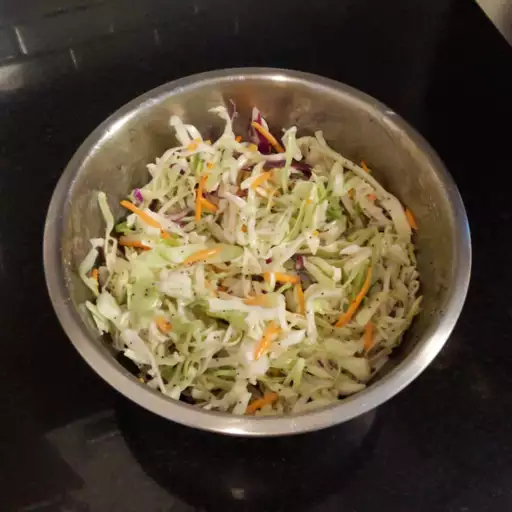

Sweet Restaurant Slaw

Description
This sweet coleslaw recipe tastes
like the slaw served at popular
fried chicken or fish restaurants.
It's excellent with burgers or on top
of BBQ pork sandwiches, too!
Ingredients
- 1 (16 ounce) bag coleslaw mix
- 2 tablespiins diced onion
- 2/3 cup creamy salad dressing (such as Miracle Whip)
- 1/2 cup white sugar
- 3 tablespoons white vinegar
- 1/2 teaspoon poppy seeds
- 1/4 teaspoon salt
Directions
- Step One:Combine coleslaw mix and onion in a large bowl.
- Step Two:Whisk salad dressing, sugar, vegetable oil, vinegar, poppy seeds, and salt together in a medium bowl until blended. Pour dressing over coleslaw mixture and toss to coat.
- Step Three:Chill for at least 2 hours before serving.